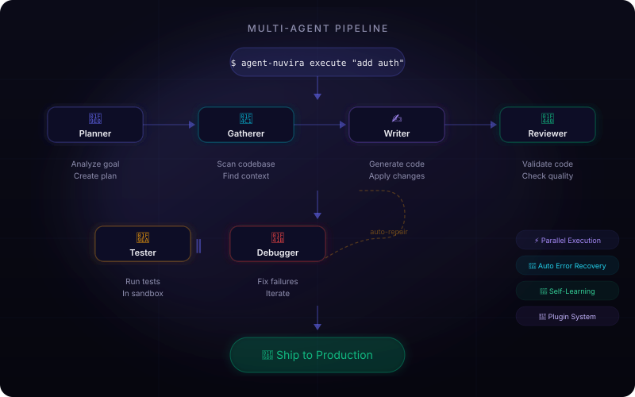
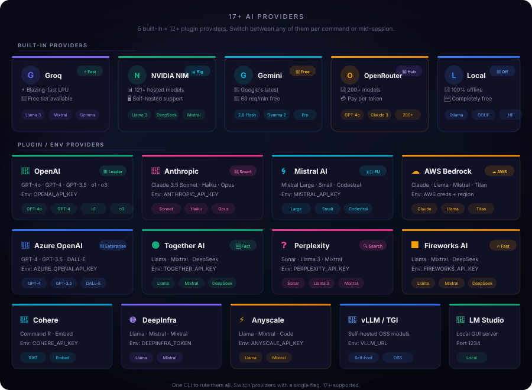
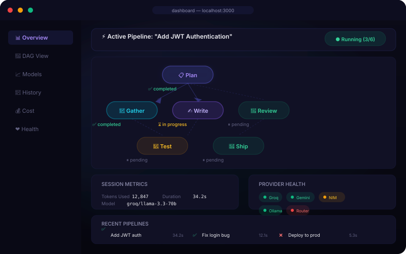

AI That Codes. 22+ Providers. 17+ Agents.
Dashboard + CLI.
The open-source, multi-agent AI coding assistant with a visual dashboard and powerful CLI.
Specialized agents plan, write, review, test, and ship code — learning from every run.
No subscriptions. No telemetry. Your models, your way.
Watch how the multi-agent pipeline orchestrates specialized AI agents to complete complex coding tasks — all from a single terminal command.
Live Preview
Multi-Agent Orchestration
Planner → Gatherer → Writer → Reviewer → Tester — all working together autonomously.
Provider Flexibility
Switch between Groq, Gemini, OpenRouter, NVIDIA NIM, or local models mid-session.
Real-Time Progress
Watch each agent execute in real-time with streaming output and live status updates.
Context-Aware Edits
Agents understand your full codebase context before making any changes.
The Core Edge
Why Agent-Nuvira?
Not another chat bot. Not a single-prompt box. A full development team in your terminal — routing across 17+ providers, learning from every run, and stretching your free quotas further than any other AI coding assistant.
22-Platform Messaging Gateway
Run the agent from Telegram, Discord, Slack, WhatsApp (Cloud API or your own number via the Baileys bridge), Email, Signal, DingTalk, Feishu, WeCom, Mattermost, Matrix, Webhook, BlueBubbles, ntfy, Teams, Google Chat, Weixin, SMS/Twilio, IRC (two-way), SimpleX (two-way), and Home Assistant — 22 platforms, each opt-in via standard per-platform env vars, with zero SDK dependencies. Guaranteed delivery ledger with auto-retry, channel aliases, and a dashboard send-test.
Smart Multi-Provider Token Routing
Stop paying flat premium fees. Every sub-task is routed across 17+ providers — local models (Ollama, LM Studio), free tiers (Groq, Google Gemini), and high-capacity clouds (OpenAI, Anthropic, Mistral, NVIDIA NIM, OpenRouter, Azure & more) — maximizing free-use limits and paying only when complexity demands it.
17 Specialized Agent Swarm
No generic single-prompt boxes. Your goal becomes a DAG of tasks handled by 17 dedicated agents — Planner, Context-Gatherer, Writer, Reviewer, Runner, Tester, Debugger, Security Auditor, Git/GitLab, Package, PR Review, Issue Triage and more — working in parallel.
Learning Router That Gets Better
A Thompson-sampling bandit learns per provider × complexity bucket from real outcomes (cost-adjusted rewards), with hard constraints, regex routing rules, uncertainty escalation on cold starts, and promotion gates that only keep router changes that measurably improve quality. A Model Availability Registry learns from real usage too — every chat/execute/plan/edit call writes which provider × model it verified or killed, so dead providers are skipped predictively (never a wasted first call) and a recovered provider is re-admitted automatically — with buff models unblock <provider> as a manual escape hatch that demotes the block, clears quota parks, and re-probes the live API to re-learn the truth. Inspect it with buff models status --verbose or the dashboard's per-action timeline — scrub across days (drag, click, range slider, or ▶ play) to replay what each action verified or killed on any given day. The VS Code extension attributes its own usage (ide-chat / ide-inline / ide-execute) so IDE-driven calls feed the same registry.
Local FAISS Context Indexing
Blazing-fast, private, semantic code search backed by a native FAISS vector store (pure-JS fallback) that strictly respects your .gitignore. Large contexts shrink to the top-k relevant chunks — saving tokens so free quotas stretch further.
First-Class MCP Integration
Seamlessly connect your codebase to external enterprise tools — Jira, Slack, PostgreSQL, GitHub Issues, file systems — using standard Model Context Protocol servers with SSE transport.
Real-Time Team Collaboration
Share context, synchronized vector indices, custom agents, and review pipelines across your engineering team via Git-synced config and memory — everyone ships from the same learned knowledge.
Quota Ledger + Self-Healing Failover
A central quota ledger tracks tokens per provider × model with calendar-aware resets, parks exhausted providers until free tier returns, and auto-fails-over mid-session when a key expires or rate-limit hits — never a stuck session, never a quota error thrown at you. Parks are per MODEL, not per provider (v2.7.3): a 429 rests that one model while its siblings keep serving, escalating to a provider-wide park only when several distinct models of the same provider are rate-limited — the honest signal for a genuinely shared limit. A model that once hiccuped is no longer penalized forever either: every success heals its error rate and a lapsed park re-admits it automatically. Rate-limit recovery is fully automatic: a transient blip is silently waited out and retried, while an exhausted or storming provider (2+ hits in a row) silently hands the task to the router's next healthy provider mid-build — no prompts, no grinding the same quota, no build interrupted. Key hygiene keeps the config honest: a provider with 3 consecutive 401/403 auth failures has its dead key auto-cleared from your config (or you're told exactly which env var to fix) with a clear error, and stale local models that were deleted (ollama rm) are pruned on the next buff models refresh — so the router never wastes a call on credentials or models that no longer exist.
No Server. No Telemetry. No Subscriptions.
Everything runs locally on your machine. Free (MIT), BYO API keys, direct-to-provider connections, fully offline-capable — no intermediary server, no data leaving your machine without your control.
Uncertainty-Driven Escalation
No coin-flip winners. When the bandit's top pick is a cold start with no learned data, routing escalates to the next-ranked provider that has real outcome data at a ≥55% win-rate floor — so unproven models never get your critical tasks on a gamble.
Per-Model Learning, Promotion-Gated
Every concrete model tracks its own Beta prior — llama-3.3-70b-versatile is learned separately from openai/gpt-oss-20b on the same provider. And nothing is promoted blindly: an A/B gate only switches the router to bandit decisions when they measurably beat the heuristic — quality up, cost and latency flat.
Routing Rules + Hard Constraints
Force any task pattern to a specific provider/model with regex or string rules (first match wins). Set hard floors like routing.maxCostUsd, routing.minSpeed, and routing.minReasoning — violating providers are eliminated outright, with graceful fallback when constraints would remove everything.
Credential-Aware + Free/Local-First Gate
Auto routing never picks a provider without configured credentials — it can't. A free/local-first gate keeps paid models out of trivial-to-moderate work (complex and critical tasks may still reach high-capacity clouds), so your budget is spent only where reasoning actually matters.
Capability-Aware Scoring (🎯 fit)
Every task type knows what it needs — plan wants reasoning, quick edits want speed, code review wants code + reasoning. Each candidate is matched against those requirements (🎯 fit N% in models explain), nudging equally-scored providers toward the one whose strengths actually fit the job. Tagged by real capability profile, clamped so it never overturns a dimension-weight advantage, and reversible via routing.capabilityFit (default ON).
Wire-Token Measured Costs (📏 measured)
Routing no longer guesses on token counts. OpenAI-compatible providers report their real usage (response body + final SSE chunk), and the router records exact input/output tokens per model (EMA) — cost scoring then uses 📏 measured tokens instead of the typical 2,000/500 estimate whenever real usage exists (costSource: measured | estimated per ranked provider). The dashboard splits spend into 📏 measured vs 📐 estimated, per call and per provider.
Governance Constraints (admin policy)
Set real admin policy with routing.governance: provider/model allow & deny lists, an admin per-call max-cost cap (stricter of admin vs per-call wins), and a PII-domain block — tasks matching your piiPatterns are only served by providers with the privacy floor you set (default local-only). Enforcement is a hard elimination, never a score nudge — and when policy eliminates every candidate, the router refuses to serve a violator with a full governanceBlocked audit trail (PIIPolicyError / GovernancePolicyError).
Context-Length Preflight (⏳ ctx)
Before picking, the router scores each provider's input window against your task's estimated prompt size (routing.contextFit, default ON). Since v1.60.x those windows are live — the probe records each provider's advertised context length (Ollama /api/tags + /api/show, OpenRouter /models, Gemini inputTokenLimit, NIM max_model_len) into the registry, so preflight uses the real spec, not a static estimate. Chat passes the real conversation length; plan & execute pass real per-task payload estimates. Soft and estimation-only — normal-size tasks are untouched, and even an over-window prompt only caps the penalty at 35% (models can exceed nominal windows). A 500K-token workspace now routes toward big-window providers automatically — see ⏳ ctx N% chips in models explain.
Those windows are now used, not merely scored against (v3.0.0): the tool-loop thread budget and the writer/edit context caps scale with the model's real window, so a large-window (1M-token) model keeps its whole window instead of being trimmed to one fixed default. Conservative by construction — budgets are only ever raised, an unknown or small window leaves the default untouched, and a small model never gets over-sent.
Multi-Account Key Rotation (🔑 key#N)
One provider, many keys. A provider can carry multiple API keys (apiKeys[]), and failover rotates through every non-parked key before switching providers — a quota-exhausted secondary account is parked (FNV fingerprint, raw keys never persisted) and the next key is tried. Parked accounts are skipped predictively on the next run and cleared by releaseAccount / buff models unblock. Rotation is logged (🔑 key#N …) and proven by a hermetic E2E test driving real adapters against a mock gateway.
Role-Based Access Control (RBAC)
Enterprise-grade authorization over the admin surface: buff admin role add/remove/list + buff admin whoami assign admin / operator / viewer roles with a scoped permission matrix (policy writes, role management, unblock). Legacy single-user mode stays fully permissive until roles are assigned, a misconfigured rbac.json logs a warning instead of silently downgrading, and an OIDC adapter interface is the token-identity seam for SSO. The dashboard mirrors it in a 🔐 RBAC Identity card.
Tamper-Evident Audit Chain
Every action lands in a SHA-256 hash-chained audit log (buff audit verify/export) — each record's hash includes the previous one, so a single edited line breaks the chain and doctor --enterprise flags the exact tamper point. CEF/SIEM export feeds your security pipeline, and a secret-redaction scrubber wired into every logger + audit writer guarantees nothing sensitive is ever persisted.
OIDC-Verified Nuvira Gateway
Turn your federation server into a token-verified gateway: buff federation start --auth oidc --oidc-public-key <pem> makes the handshake an RS256-JWT bearer check (sub/exp/issuer/audience enforced by a dependency-free adapter), with the PEM path persisted for daemon restart. Secret-mode interop is unchanged, and buff nuvira serve exposes the same decision layer as a headless OpenAI-compatible endpoint — RBAC, audit, and governance all gate what the gateway will do.
Features
More Than a Chat Bot. A Full Development Team in Your Terminal.
Agent-Nuvira isn't just another AI assistant — it's an autonomous pipeline of specialized AI agents that work together to ship code.
Multi-Agent Pipeline
17+ specialized agents — Planner, Writer, Reviewer, Tester, Debugger, GitLab Agent, PR Review Agent, and more — orchestrated to complete complex goals autonomously.
17+ AI Providers
Connect to Groq, NVIDIA NIM, Google Gemini, OpenRouter (200+ models), AWS Bedrock, Azure OpenAI, DeepSeek, or run locally with Ollama — all through one unified CLI. 5 built-in, 12+ configurable. Or let the Auto router pick the best one per task.
Fully Offline-Capable
Run entirely offline with local models via Ollama, HuggingFace, or GGML. No internet connection required.
Privacy-First
Your code connects directly to your chosen AI provider. No intermediary server, no telemetry, no data leaving your machine without your control.
Plugin System
Extend the CLI with custom AI providers and agent types. A programmatic SDK lets you build and register new capabilities.
Self-Learning System
Adaptive model routing, trajectory scoring, and pattern extraction that improve over time. The system learns which models perform best for which tasks.
Git & PR Integration
Built-in GitLab REST API client and GitHub PR Review Agent. Create MRs, review PRs, post inline comments, run security scans on changed files — all from the terminal.
Real-Time Team Collaboration
Share config, memory, and review pipelines across your team via Git-synced collaboration — plus the PR Review Agent checks changed files for security issues, style violations, and code quality, posting results directly on the PR.
Auto Dependency Install
Runner detects 11 project manifest types (npm, pip, bundler, cargo, go, composer, dart), installs missing dependencies on failed commands, and bootstrap-installs missing package managers — via brew, apt, winget, or rustup.
Auto Model Routing
Pick Auto and the agent picks the right model for the right task — a fast small model for quick edits, a frontier model for deep reasoning, local for private work. Since v1.60.0 there are no hardcoded defaults: auto resolves at runtime to the best available provider for your keys + learned registry (verified → configured-with-key → zero-config local), and every unpinned model resolves to a registry-verified working model — explicit pins still win. Complexity-aware scoring across 5 dimensions: reasoning, speed, cost, privacy, reliability.
Real Provider Pricing
Routing decisions use actual per-1K-token list pricing from each provider — free tiers count as $0 — so cost optimization reflects real-world spend, not static guesses.
Benchmark-Driven Learning
Decisions get sharper with use — real benchmark quality scores and per-agent best-model stats from your own runs are blended into every routing decision.
Central Quota Ledger
Tracks tokens/requests per provider × model with calendar-aware reset windows. Exhausted providers are parked until their free tier resets (auto re-enable, no timers), and Auto routing avoids them before a call is made. A free/local-first gate keeps paid models for complex work only — with a cost summary showing exactly how much you saved.
Checkpoint & Resume
Crash, quota kill, or token expiry mid-pipeline no longer restarts the whole plan. --checkpoint saves a resume-able snapshot after every task batch; --resume continues from the first pending step — skipping completed steps and the planner entirely.
Vector Retrieval
Large contexts are chunked, embedded locally (bge-small-en-v1.5, zero new deps) and reduced to the top-k semantically-relevant chunks before the LLM call — saving tokens so free quotas stretch further. Small contexts pass through untouched; any failure fails over to full context.
Thompson-Sampling Bandit Routing
Auto routing learns from real outcomes with a Thompson-sampling bandit per complexity bucket. Cold-start behaves deterministically; uncertainty escalation avoids coin-flip winners; per-model learning tracks which concrete model performs best; and a promotion gate A/B validates the bandit actually improves quality before promoting it.
FAISS-Backed Vector Store
Similarity search runs on a pluggable backend: real FAISS native bindings when built, a pure-JS IVF ANN otherwise, with an exact-cosine fallback that always works. Auto-selected per machine — buff memory backend --check shows which tier you're on. Same JSON format, zero data migration.
Self-Healing Failover
When a provider dies mid-session (expired key, exhausted quota, deprecated model), Auto mode automatically hops to the next-best provider — and an optional confirmation prompt keeps you in control of every swap. Every failover is recorded in a live timeline.
Failover is deep and shared (v2.7.3): CLI chat, the dashboard console, the messaging gateway, execute and the multi-agent orchestrator all walk the same candidate pool — several models per provider plus a reserve pool of credentialed-but-unverified providers — with the router's own pick pinned first, model-scoped exclusions (one failed model never costs you its healthy siblings), cross-pipeline failure memory, and a per-entry registry skip so parked models are avoided before the call, not after. “Reject only when nothing is left” holds even when every candidate looks unhealthy: excluded candidates are attempted last, never dropped.
Failover now reaches mid-turn too (v3.0.0): the single agentic loop engine behind execute and chat walks the same pool between steps, so a 429 on step 3 hands the rest of the turn to the next candidate instead of killing it — and every failure is written through the shared bookkeeping, so the failed model is parked and the next run routes around it. A pinned run (--provider) fails over as well: it walks the config-declared fallback chain, credential-filtered (an entry with no key never costs a connection timeout), with registry-parked fallbacks ordered last — derived lazily, so a healthy pinned run pays nothing. A failure that indicts the whole provider (a dead key) is surfaced rather than silently swapped, and a provider that keeps failing inside the rate-limit window is parked for the full window instead of retried into.
No Silent Failures — The Reliability Stack
Since v1.62.0 the pipeline can't quietly skip work: a writer that returns unparseable output now fails the task so the repair engine escalates to a stronger model (a genuine "no changes needed" decline stays a no-op). A reviewer that blocks a change routes through a writer fix pass — the writer applies the review feedback, then the reviewer re-verifies as the gate. And when only a weak local model is available, you get a pre-flight warning before the pipeline burns minutes on a task likely to fail.
buff code-map — Project Symbol Map
One command maps your whole project: buff code-map lists every function, class, and method with its 1-based source line — --json for machine output, multi-language via the AST engine. No native parser dependencies, works offline — and the engine fix behind it recovered top-level functions that were silently dropped from the structure map (which also sharpened the edit pipeline).
Scheduled Jobs (buff admin cron)
Run any pipeline tool on a schedule: buff admin cron add "0 9 * * *" build --args '...' validates the 5-field cron expression and the tool's argument schema at add time — a typo surfaces immediately, not at 3am. Jobs persist to disk, are RBAC-gated (cron.manage), support --dry-run (validate + next run without executing), and can deliver results to a gateway channel.
Session Recall — Memory Across Runs
Chat doesn't start from zero. Each session auto-recalls this project's past sessions, learned facts, and your last checkpoint — surfaced as a recall card before the answer — so "continue where we left off" and cross-session context work out of the box, scoped per project with temporal filters.
Model-Decides Routing + Sub-Agent Delegation
Since the revamp, every request enters the tool loop — the model itself decides whether a task is chat, a plan, an edit, a build, a test, or something to delegate. The orchestrator can spawn isolated sub-agents in parallel (per-subagent timeout + kill), each with its own fresh context, then merge their results — the model's own judgment, not a menu, drives what happens next.
How It Works
The Multi-Agent Pipeline
A goal goes in. Code comes out. Here's what happens in between — including GitLab integration and automated PR review from v1.32.0.
$ agent-nuvira execute <goal>
🧠Planner
Analyzes goal, creates task plan
📁Gatherer
Scans codebase for context
✍️Writer
Implements code changes
👀Reviewer
Validates for bugs & style
🧪Tester
Runs tests in sandbox
✅Verify
Security scan + quality checks
🚀Ship
Commits & publishes

Parallel execution where possible
Per-agent model configuration
Automatic error recovery
Dry-run preview mode
Providers
Choose Your AI Engine
Connect to any provider — or run locally. Switch between them per command or mid-session.

Groq
Blazing-fast LPU inference for open-source models. Free tier available with generous rate limits.
Agent-Nuvira's multi-agent pipeline is available wherever you code.

VS Code Extension — Plus the Full CLI Agent
This isn't just an editor plugin — it's the complete agent-nuvira development agent that also runs from your terminal. Inline suggestions, agent chat panel, diff viewer, and all 17 agents work in VS Code and as a full CLI: agent-nuvira execute "" runs the entire multi-agent pipeline from any shell, CI job, or editor.
Build custom agents with the @agent-nuvira/sdk package. Extend the pipeline with your own specialized agent roles.
$ npm install @agent-nuvira/sdk
Web Dashboard
Monitor provider health, visualize agent execution DAGs, browse conversation history, and track cost — all from a local web UI.
$ agent-nuvira dashboard
Git & PR
GitHub & GitLab PR Automation
New in v1.32.0 — two dedicated agents for Git platform integration: PR review automation and GitLab project management, all from your terminal.
🦊
GitLab Agent
New in v1.32.0
Full GitLab REST API v4 integration for project management directly from the terminal.
Create, list, comment on, and merge merge requests
Create and comment on issues
Check pipeline status
Discover and browse projects
Supports gitlab.com and self-hosted instances
$export GITLAB_TOKEN='glpat_your_token'
👁️
PR Review Agent
New in v1.32.0
Automated PR review with inline comments, security scanning, and quality checks via GitHub API.
List open PRs across repositories
Review specific PR (#42) or all open PRs
Post inline review comments on changed lines
Run VerifyModule security + quality scans
Post summary comment with pass/fail/blockers
$export GITHUB_TOKEN='ghp_your_token'
Use them in task plans or directly via the Planner:
$ agent-nuvira execute "review open PRs in my-org/my-repo"
Enterprise Ready
Built for Teams. Secured by Design.
Enterprise-grade security, governance, and audit — not bolted on, but designed into every layer.
Role-Based Access Control
RBAC with admin / operator / viewer roles, a scoped permission matrix, and optional OIDC identity seam for SSO. Legacy single-user mode stays fully permissive until roles are assigned.
Tamper-Evident Audit Chain
SHA-256 hash-chained audit log — every record's hash includes the previous one. CEF/SIEM export, secret-redaction scrubber, and buff audit verify detects any tampering.
Governance & PII Protection
Provider/model allow & deny lists, admin max-cost caps, and PII-domain blocking — tasks matching your patterns are only served by providers meeting your privacy floor.
22-Platform Messaging Gateway
Run from Telegram, Discord, Slack, WhatsApp, Email, Signal, Teams, Google Chat and 14 more — each opt-in via standard env vars, zero SDK dependencies.
Why Agent-Nuvira?
Built Different. Truly Open.
See how we stack up against the competition.
Feature
Agent-Nuvira
GitHub Copilot
Cursor
Claude Code
Multi-Agent Pipeline
✓ 17 agent roles
✗ Single agent
✗ Single agent
✗ Single agent
AI Provider Choice
✓ 17+ providers + plugins
✗ OpenAI only
✗ Vendor-locked
✗ Anthropic only
Offline Capable
✓ Full offline
✗ Cloud-only
✗ Cloud-only
✗ Cloud-only
Privacy / No Telemetry
✓ Direct-to-provider
✗ Routes via MS
~ Limited
~ Limited
Pricing
✓ Free (MIT) + API keys
✗ $10-39/mo
✗ $20/mo
✗ $20/mo
Plugin System
✓ Full SDK
✗ None
✗ Limited
✗ None
Self-Learning
✓ Adaptive routing
✗ None
✗ None
✗ None
Terminal-Native
✓ No IDE lock-in
~ VS Code only
~ Cursor only
~ Terminal-only
Ready to Supercharge Your Development?
Join developers who are already using Agent-Nuvira to ship code faster, with more control and zero vendor lock-in.